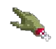
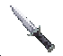

This page is inspired by my love for the classic Sierra RPG/adventure game Quest for Glory IV: Shadows of Darkness, first released in 1993. Sierra was also known for other popular adventure game series such as King's Quest, Space Quest and Police Quest. Quest for Glory IV takes place in and around a small town called Mordavia in a fictional medieval land of the same name, based on Slavic Eastern Europe judging from the characters' names and accents, as well as the elements of Slavic folklore such as the domovoi and rusalka incorporated into the story.
The game is notable not only for its gameplay, which with the exception of the combat system is mostly similar to all previous games in the series, but for its excellent music and its visual aesthetic. Some consider the title the best of the five entries in the series, and while contemporary reviews were not outstanding, some now call it one of the best adventure games of all time.
The man you might see to your left depending on your screen width is Dr. Cranium, a bizarre but helpful scientist character from the game, while the background image is the inside of his lab. This is a reference to the Dr. Brain series of puzzle games released by the same company.
My main purpose here is to follow up on an idea which came to me in 2015 in the context of a user interface course in graduate school. Namely this is an attempt to imitate much of the interface of the game, including the graphics for the game's text boxes and menus, but to apply it to a website rather than a game. Others have already implemented some of the cursors from the game as extensions to an operating system.
Downloads
All five of the original games in the series can be had cheaply from GOG.com. This set of the games includes a remake of the first title with far better graphics, but unfortunately those of the second game are still rather primitive. You can however download a greatly improved 2008 remake of Quest for Glory II: Trial by Fire. This is freely available, as is a well-received 2013 game based on the series, entitled Heroine's Quest. There is also a laughably awful fan-made game called Quest for Glory 4 1/2, released in 2012, while a higher-quality 2014 game partly inspired by but not explicitly based on the series is called Quest for Infamy.
Many more downloads including screenshots can be found at a fan page called Quest for More Glory, while help for various problems, including the game's rather creative manuals, is available at Sierrahelp.com. Sierragamers.com supplies the hint book.
A promising "role-playing adventure game" entitled Hero-U: Rogue to Redemption is currently under development by Sierra designers Corey and Lori Cole, who were responsible for the Quest for Glory series and contributed to various other Sierra games such as King's Quest V. The title is scheduled for release somewhere between late June and mid-July. An ongoing fan-made effort at a QfG-inspired game, this one entitled Hero6, can be found here.
Game Images
Here are some images from the game, to give a sense of what this page is attempting to emulate. Many background images from the game can be found here.
Icons
Here are some icons from the game, plus a bullet image used in some of the menus in the game. The icons are used to interact with the environment in different ways; for example, the mouth icon is used to speak with someone, while the feet icon you can see in this page's navigation menu is used to walk somewhere. An attempt has already been made by others to implement some of these as extensions to an operating system.
 Music
The music for this game has been described as "gothic, folk and rock" and includes a rendition of Anitra's Dance, part of Peer Gynt Suite No. 1, Op. 46 by Edvard Grieg. Grieg was a Norwegian nationalist composer of the Romantic era, and appropriately for the rural setting and peasant characters of the game, was influenced by the folk music of his own country.
According to the soundtrack's composer, Aubrey Hodges, none of it is yet available in sheet music form. The original soundtrack is however freely available on YouTube, as you can see in the video above, or from Sierra Music Central, while an updated version including live instruments and 42 new arrangements can be purchased from the composer's Bandcamp page.